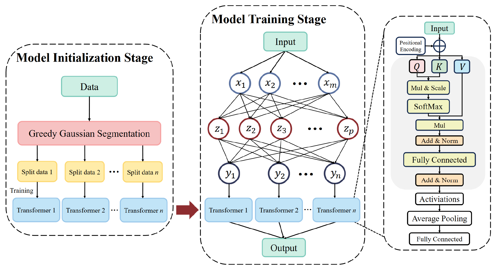
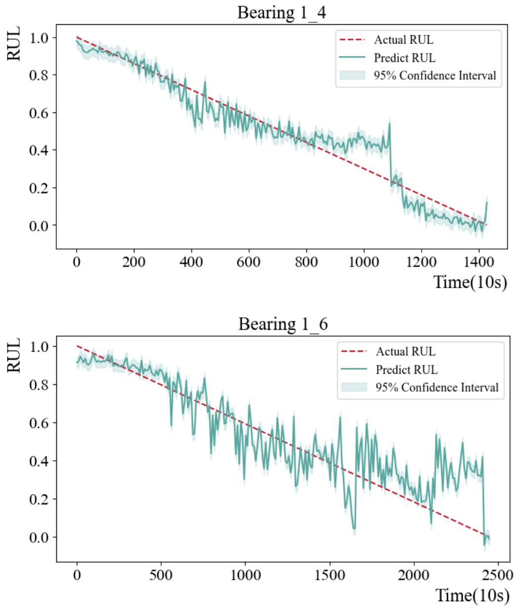
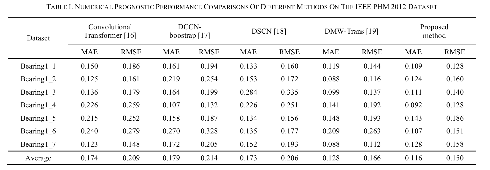
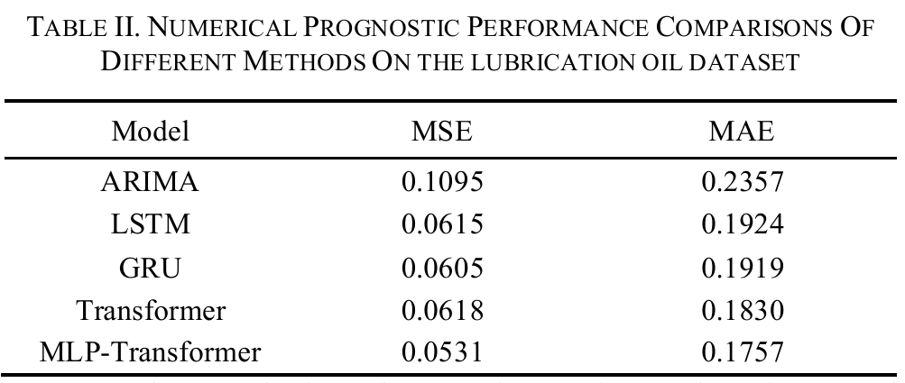

Model initialization
Initialize a set of Transformer models using time-series subsets with different characteristics.
A multi-layer perceptron coordinates specialized Transformer models for time series with changing patterns. The study evaluates bearing remaining useful life and jet-engine lubrication oil forecasting.
The original architecture illustrates model initialization, coordinated training, and the prediction stage.

Initialize a set of Transformer models using time-series subsets with different characteristics.
The MLP learns model selection while Transformer models specialize in corresponding data patterns.
Input batches are classified by the MLP and passed to the corresponding Transformer.
Explore the original figures and their accompanying research context.

The paper reports an average MAE of 0.116 and an average RMSE of 0.150 across seven bearing sequences in Table I.


Full bibliographic details and direct links to the papers.
@inproceedings{MLPTransformer2024,
title = {MLP-Transformers: Multi-Layer Perceptron coordinated Transformers for Time Series Forecasting},
author = {Shuhuai Gu and Junyou Zhang and Yutong Peng and Liqi Ye and Jing Wang and Qi Xi},
year = {2024},
booktitle = {SGES},
doi = {10.1109/SGES63808.2024.10824143}
}Direct links to the notebooks, models, and files in the project.
Open the original model training and prediction notebook.
main.ipynbBrowse the original TensorFlow H5 model artifacts.
models/Read the complete study and experimental comparisons.
SGES 2024 · IEEEExplore the research files and follow project updates.
Kisen7/MLP-TransformerContinue in the repository.Code, research files, and project updates in one place.
Kisen7 / MLP-Transformer ↗